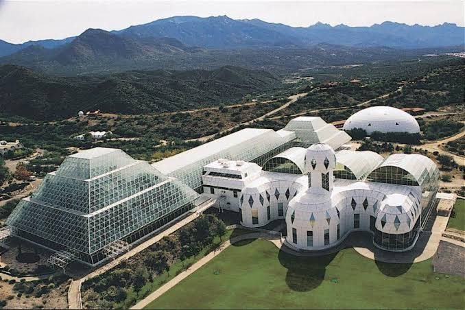

Research Strategic Plan
Biosphere 2 (B2), a campus of the University of Arizona (UA), engages in world-class environmental research, education, and entrepreneurship leading to solutions for humanity’s grand challenges of climate change, biodive
Research Strategic Plan
Executive Summary
Biosphere 2 (B2), a campus of the University of Arizona (UA), engages in world-class environmental research, education, and entrepreneurship leading to solutions for humanity’s grand challenges of climate change, biodiversity loss and sustainable development, on Earth and beyond. The core research facility of the B2 campus is the world’s largest indoor controlled environment for ecological and climate change research across multiple biomes. The campus also boasts a growing number of specialized research spaces, including facilities dedicated to development of co-located food and photovoltaic energy production and a human-habitat analog for the Moon and Mars that emphasizes research on life support systems and astronaut training. The B2 campus hosts a UA Center for Innovation incubator, a Visitor Center that attracts and educates nearly 100,000 visitors annually, and a 100-person conference and retreat center.
Over the last decade, B2 has built its fundamental research and core educational programs and expanded its portfolio beyond these efforts. To enhance our impact still further, our strategic plan for the next five years rests on five pillars, closely linked to the UA strategic plan: Sustainability research, Resilience solutions, Our region, Tomorrow’s leaders, Networks. These pillars are underlain by two foundations essential for everything we do: excellence in operations and justice, diversity, equity and inclusion.
Mission
Biosphere 2 advances our understanding of natural and human-made ecosystems through integrated research and development of scalable interventions that increase the resilience and sustainability of Earth systems and human societies. We foster research in our unique facilities, conduct interdisciplinary science education, and lead in developing solutions for our planet and beyond.
Vision
By 2030, Biosphere 2 will be a global center for resilience solutions to humanity’s grand challenges of climate change, biodiversity loss, and sustainable development. We will be a collaborative and inclusive hub in a network that provides education, ideas, research and innovations for sustainability from the University of Arizona campus to the entire globe.